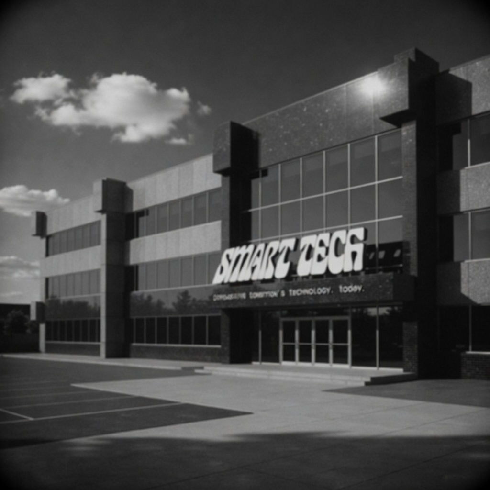
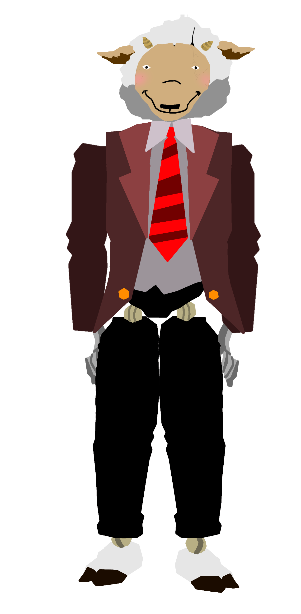

About the CompanyFounded in 1967 in Ravenwood, Smart Tech Inc. has remained at the forefront of technological innovation for decades. Established by Dr. Elias Virelli and Dr. Conrad Halberg, the company focuses on adaptive interactive systems, behavioral modeling, and cross-industry automation technologies. FoundersDr. Elias Virelli Dr. Conrad Halberg MissionTo advance interactive systems through adaptive behavioral simulation and large-scale integration technologies. External Collaborations
Services and Technologies
Product Highlight Velvet, The Singing Sheep Velvet is Smart Tech Inc.’s flagship interactive companion unit, designed for advanced voice response, musical interaction, and adaptive behavioral learning. Originally developed as part of early experiential audio systems, Velvet remains one of the company’s most refined and widely recognized interactive platforms. Learn more about our history...1967 — FoundationSmart Tech Inc. is established in Ravenwood as a research and development company focused on adaptive systems. 1975 — ExpansionVelvet Sheep Diner project initiated under external partnership frameworks. 1977 — Regulation UpdateEndoskeletal compression technology restricted following internal safety reviews. 1984 — Internal Systems ReviewCompany-wide diagnostics identify irregular sensor calibration in experimental response systems. Corrective updates deployed across testing units with no operational disruption. 1986 — July 3 Field TestSpring-compression prototype suit tested under controlled conditions. Program evaluation concluded early due to mechanical instability and redesign requirements. 1986 — November 1 System UpdateVelvet achieves a major behavioral coherence milestone, improving long-term interaction stability and response accuracy across test environments. 1992 — Katty ReactivationAn archived experimental robotic unit was reintroduced under the designation “Katty” for limited observational testing in controlled environments. 1992 — FAILURE01000001 01101110 00100000 01110101 01101110 01101001 01100100 01100101 01101110 01110100 01101001 01100110 01101001 01100101 01100100 00100000 01110100 01100101 01100011 01101000 01101110 01101001 01100011 01101001 01100001 01101110 00100111 01110011 00100000 01110010 01100101 01101101 01100001 01101001 01101110 01110011 00100000 01110111 01100101 01110010 01100101 00100000 01100110 01101111 01110101 01101110 01100100 00100000 01101001 01101110 01110011 01101001 01100100 01100101 00100000 01100001 00100000 01100110 01101111 01110101 01101110 01100100 01110010 01111001 00100000 01100010 01101111 01101001 01101100 01100101 01110010 00101110 00001101 00001010 00001101 00001010 01000011 01100001 01110101 01110011 01100101 00100000 01101111 01100110 00100000 01100100 01100101 01100001 01110100 01101000 00111010 00100000 01110111 01101111 01110010 01101011 01110000 01101100 01100001 01100011 01100101 00100000 01100001 01100011 01100011 01101001 01100100 01100101 01101110 01110100 00101110 00001101 00001010 00001101 00001010 01000001 01110101 01110100 01101000 01101111 01110010 01101001 01110100 01101001 01100101 01110011 00100000 01101110 01101111 01110100 00100000 01100001 01110111 01100001 01110010 01100101 00101100 00100000 01100011 01100001 01110011 01100101 00100000 01100011 01101100 01101111 01110011 01100101 01100100 00101110 00100000 01010111 01100101 00100000 01100001 01110010 01100101 00100000 01110110 01100101 01110010 01111001 00100000 01110011 01101111 01110010 01110010 01111001 00100000 01100110 01101111 01110010 00100000 01110100 01101000 01100101 00100000 01100110 01100001 01101101 01101001 01101100 01111001 00100000 01101111 01100110 00100000 01110100 01101000 01101001 01110011 00100000 01101001 01101110 01100100 01101001 01110110 01101001 01100100 01110101 01100001 01101100 00101110 Contact
Smart Tech Inc.
Email: contact@smarttech-inc.com © Smart Tech Inc. All rights reserved. Web blog created in: April 7, 2003. Made by ██████████ █████ |